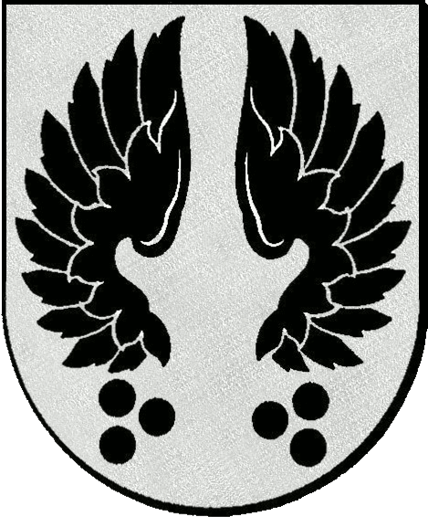
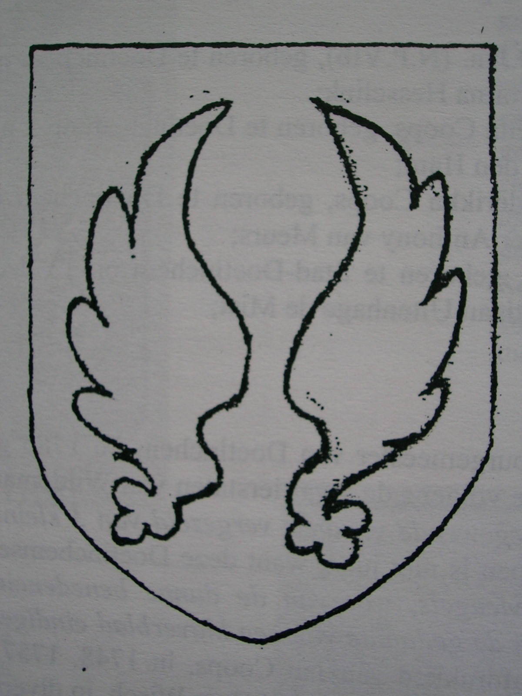
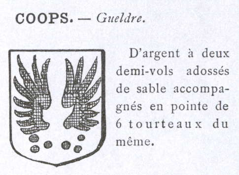
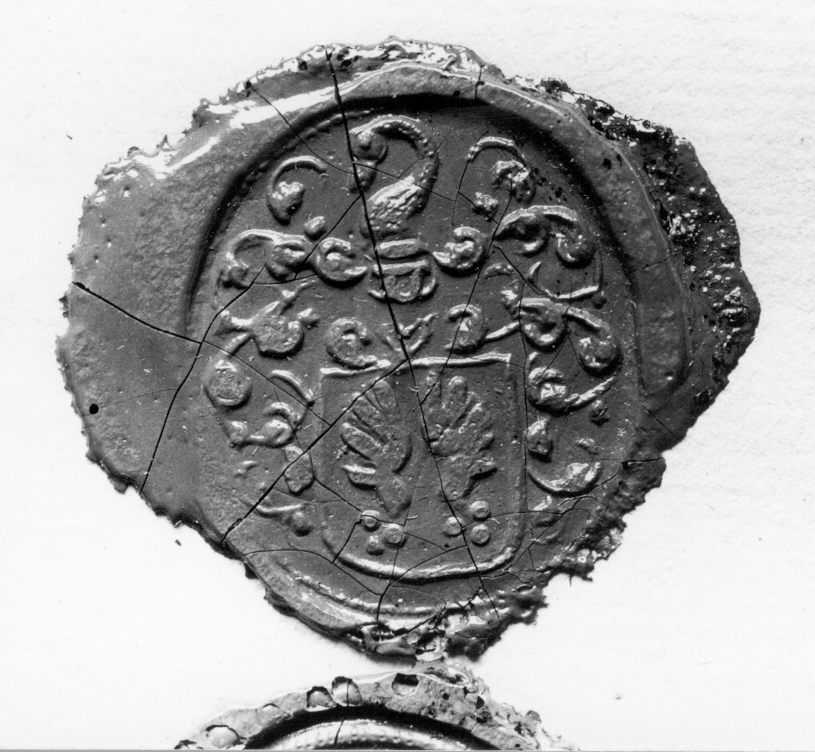
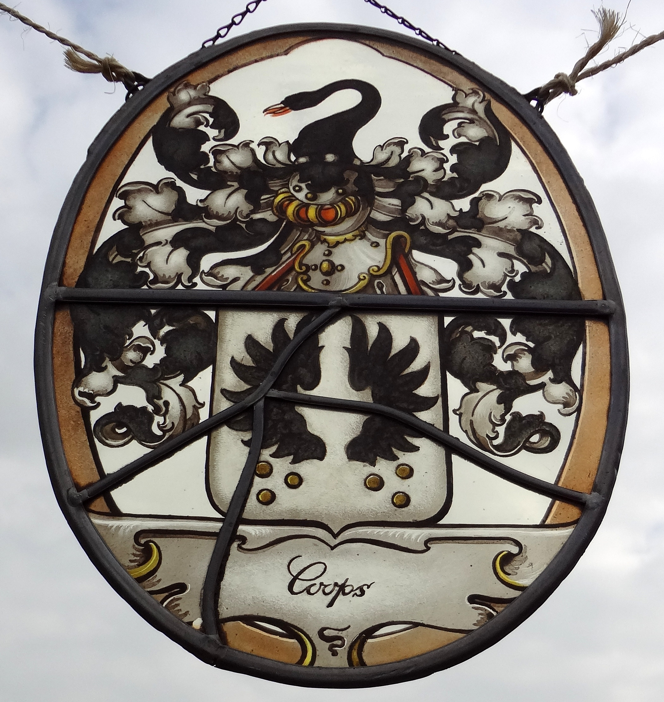
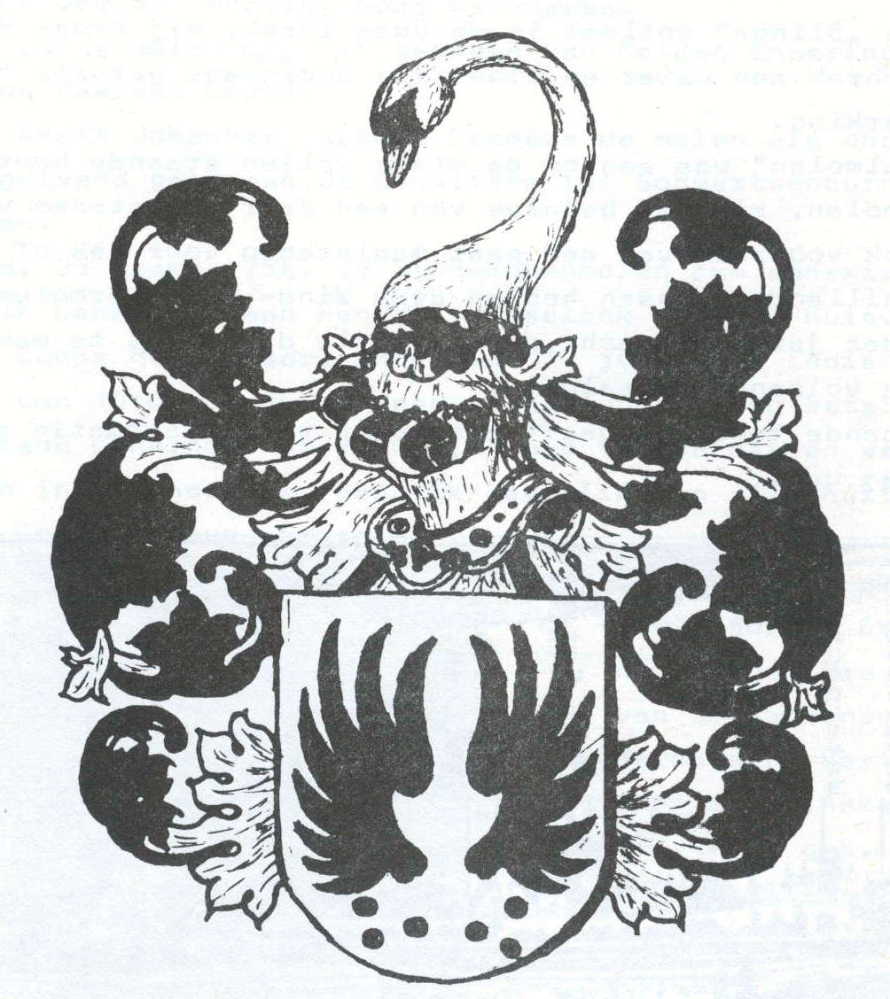
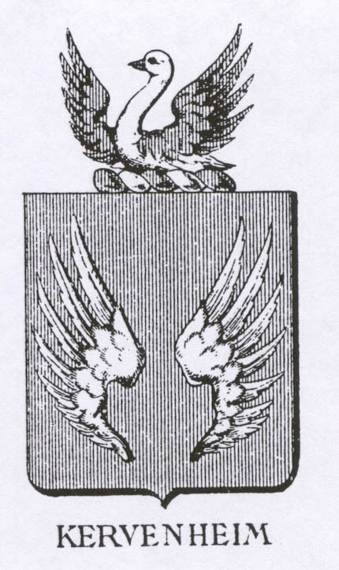

Oorsprong van het familiewapen
C. Coops, de schrijver van "Vierhonderd jaar Molenaars, genealogie van een geslacht Coops", beschrijft de oorsprong van het familiewapen. Hoewel enige bronvermelding ontbreekt, wil ik dit verhaal hieronder in gewijzigde vorm overnemen.
Het wapen doet, voor zover bekend, zijn intrede in de familie Coops ergens in de eerste helft van de achttiende eeuw.
In het jaar 1700 trouwt Derk Coops met Anna Catharina ten Ham, dochter van Berent Jansz. ten Ham en Margaretha Frederiksdr. van Juchem. Anna had een zuster, Geertruid, die getrouwd was met hun beider volle neef, Frerick van Kervenheim.
Jan Derksz. Coops had dus een behuwd oom, Frerick Van Karvenheim, die tevens een volle neef was van zijn moeder, Anna Catharina.
Frerick van Karvenheim was een achterkleinzoon van jonkheer Bernt van Kervenheim, gestorven in 1641. Deze had slechts één, niet adellijke, doch wel wettige zoon, tevens Bernt geheten. Zoon Bernt had twee zonen, Isebrant en Jan van Karvenheim. Deze laatste Jan trouwde met Geertruid van Juchem Fredricksdr. en was de vader van Frerick van Karvenheim. Met de zoon van Jan's broer Isebrant, Barent Jan van Karvenheim, stierf het geslacht Van Karvenheim uit, nu ook het echtpaar geertruid en Frerick geen kinderen kreeg.
Van Juchem, Ten Ham, Coops en Van Karvenheim
Margaretha en Geertruid van Juchem waren zussen. Daardoor waren hun kinderen Geertruid ten Ham en Frerick van Karvenheim volle neef en nicht. Frerick was een aangetrouwde oom van Jan Derksz. Coops.
Jan Derksz. en Wolter Derkz. waren twee van de kinderen van Derk Coops en Anna Catharina ten Ham. C. Coops opperde dat Jans zegel uit de nalatenschap van zijn oom Frerick kwam. Die overdracht is vooralsnog een hypothese.
Bronnen: C. Coops, Vierhonderd jaar molenaars, deel 2-a, p. 5–9 en 16–18, en deel 2-b, p. 51. Zie ook de familiegenealogie voor Derk, Jan en Wolter.
Wie voerden het wapen?
Het familiewapen zoals afgebeeld in de "Rietstap" werd, blijkens de door het Centraal Bureau voor Genealogie ("CBG") verstrekte gegevens (Heraldische collecties R.T. Muschart en Steenkamp Damstra en eigen Heraldische Databank), in ieder geval gebruikt door de volgende personen:
- Jan Derksz. Coops (1702–1779), waagmeester en leenman. Van hem is de oudste bekende Coops-zegelafdruk bewaard, gedateerd 29 april 1748. Bekijk het lakzegel.
- Wolter Coops DJzn geboren te Doetinchem in 1764, gehuwd met Harmina Hesselink (hun zoon: Herman Hendrik Timotheus Coops);
- Gerharda Henriëtta Coops, geboren te Doetinchem op 2 mei 1787, gehuwd met Mor Arikus van den Ham;
- Wilhelmina Frederikka Coops, geboren te Doetinchem op 3 november 1799, gehuwd met Peter Anthony van Meurs;
- Harmina Coops, geboren te Stad-Doetinchem op 13 december 1819, gehuwd met Jacob Christiaan Uitenhage de Mist;
"Wolter Coops. burgemeester van Doetinchem, in 1786 getrouwd met Hermina Hesselink, voerde volgens de kwartierstaten van Wildeman en van de Blocquery als wapen: "2 toegewende vleugels vergezeld van 3 kleine koeken beneden elke vleugel". Dit wapen is niet juist, want deze Doetinchemse familie Coops voerde "2 toegewende vleugels, waarvan de dunne benedeneinden naar buiten zijn omgebogen en in de gedaante van een klaverblad eindigen", zooals o.a. duidelijk blijkt uit de lakafdrukken van Jan Coops, in 1748, 1757, 1759, 1762, 1772 en 1777 te Doetinchem leenman van het Huis Wisch, in diverse bronnen."
Steenkamp/Damstra geeft echter een afbeelding van het wapen dat Wolter Coops voerde dat gelijk is aan de afbeelding in "Rietstap's Armorial Général Heraldry today", oftewel 2 toegewende vleugels vergezeld van 3 kleine koeken beneden elke vleugel.
Dezelfde Steenkamp/Damstra geeft overigens tevens een afbeelding van het wapen zoals dit door de door R.T. Muschart genoemde Jan Coops is gebruikt (in 1757 en 1777) ...
2 toegewende vleugels, waarvan de dunne benedeneinden naar buiten zijn omgebogen en in de gedaante van een klaverblad eindigen. Het lijkt erop dat de twee verschijningsvormen van ons familiewapen naast elkaar bestonden?
C. Coops beschrijft ongearceerde lakzegels op stukken uit onder andere 1748, 1753 en 1757. Hij herkent onder de vleugels twee groepen van drie bollen en duidt ze als zwart. De uitgave van Nederland’s Patriciaat uit 1947 noemt bronzen penningen. Op de lakzegels baseert Coops zijn lezing van de vorm en rangschikking. De kleur berust op zijn heraldische interpretatie. Bron: C. Coops, Vierhonderd jaar molenaars, deel 2-a, p. 5–7 en 9.
Wapens, zegels en beschrijvingen


Nederland’s Patriciaat
De jaargang van 1947 (nr. 33) noemt een zwarte vlucht met tweemaal drie bronzen penningen en een zwaan met rode snavel. De jaargang van 1983 (nr. 67) beschrijft twee toegewende vleugels met onder elk drie zwarte koeken, een zilveren zwaan met rode snavel als helmteken en zwarte dekkleden, gevoerd van zilver.


De klaverbladvorm
In de beschrijving van R.T. Muschart buigen de onderste uiteinden van de twee vleugels naar buiten en eindigen ze in klaverbladvorm.


Rietstap en Rolland
Het supplement van V. en H.V. Rolland beschrijft voor Coops–Gueldre een zilveren veld met twee zwarte halve vleugels en zes zwarte koeken.


Lakzegel van Jan Derksz. Coops
De oudste bekende afdruk dateert van 29 april 1748. Vindplaats: Gelders Archief, Archief Gelderse Leenkamer, nr. 160.


Wapen in glas-in-lood
Het familiewapen van Coops in glas-in-lood. Deze scherpere archieffoto toont hetzelfde wapen.
Coops en Van Karvenheim naast elkaar
De gelijkenis zit vooral in de twee toegewende vleugels op het schild en de zwaan erboven. In de afgebeelde Coops-versie staan onder de vleugels zes bollen. Die ontbreken in deze afbeelding van Van Karvenheim. De gelijkenis helpt verklaren waarom C. Coops een verband vermoedde. De herkomst van het zegel blijft een open vraag.


Coops
Twee toegewende vleugels en onder elke vleugel drie bollen. Boven het schild staat een zwanenhals met kop.


Van Karvenheim
Twee toegewende vleugels en een zwaan met opgeheven vleugels als helmteken. Afbeelding uit F. Schreuder, Hengelo Gelderland, duizend jaar.